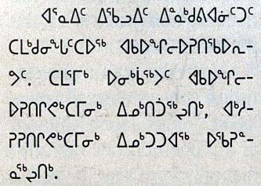
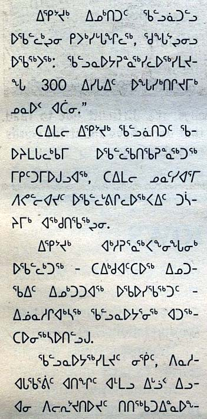
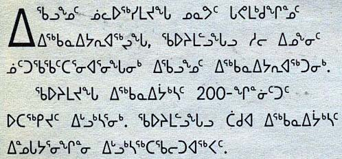

Canadian Aboriginal Syllabics/Eastern Canadian Inuktitut (draft)
Updated
13 June, 2020
This page gathers together basic information about the Unified Canadian Aboriginal Syllabics (UCAS) script and its use for the Eastern Canadian Inuktitut language, focusing particularly on usage in Nunavut and Nunavik. It aims (generally) to provide an overview of the orthography and typographic features, and (specifically) to advise how to write Inuktitut using Unicode; for greater details follow the footnote links (especially those with an arrow alongside them).
Unified Canadian Aboriginal Syllabics are used for a range of Algonquin and Inuit orthographies indigenous to Canada, including Cree, Ojibwe, Inuktitut, and occasionally Blackfoot languages.
Inuktitut syllabics are used in Canada by the Inuktitut-speaking Inuit of the territory of Nunavut and the Nunavik region in Quebec. The script is used by governmental agencies and in business, education, and media.
In 1976, the Language Commission of the Inuit Cultural Institute made Inuktitut syllabics the co-official script for the Inuit languages, along with the Latin script and standardised both orthographies.
Names:
ᖃᓂᐅᔮᖅᐸᐃᑦqaniujaːqpaˈit Inuktitut syllabics.
ᖃᓕᐅᔮᖅᐸᐃᑦqaliujaːqpait The Latin orthography.
ᑎᑎᕋᐅᓯᖅ ᓄᑖᖅtitiʁausiq nutaːq The new orthography (post 1976).
ᑎᑎᕋᐅᓰᑦ ᓄᑕᐅᓐᖏᑦᑐᑦtitiʁausiːt nutaunŋittut The old (pre-1976) system.
The 'Inuktitut language' comprises a number of similar dialects, which have divergeant vocabulary and pronunciation. The following lists dialects in Nunavit: Inuinnaqtun, Nattilingmiutut, Qamani’tuarmiutut, Paallirmiutut, Aivilingmiutut, North Qikiqtaaluk, Central Qikiqtaaluk, South Qikiqtaaluk (includes the capital, Iqaluit), and Sanikiluarmiutut. The orthography follows the sounds spoken, which leads to different spellings for the different dialects. Some dialects use only the Latin orthography.
The Canadian syllabic script was first created in 1840 by the British missionary James Evans for writing the Swampy Cree dialect. The individual symbols may represent different phonemes for each language.
The syllabic script was first adapted to represent Inuktitut around the middle of the 1800s, again by missionaries, and early print runs occurred in the 1870s.w
The Unified Canadian Aboriginal Syllabary is, as the name says, a syllabary, ie. each symbol typically represents both a consonant and a vowel. See the table to the right for a brief overview of features for the modern Eastern Canadian Inuktitut orthography. (See the key. Character counts exclude ASCII characters.)
The majority of symbols in the syllabary represesent a CV pairing, and the symbol is rotated to indicate whether the vowel is i, u, or a, or in some dialects ai. There is also a set of superscript symbols representing syllable-final consonants.
A small dot above a symbol indicates a lengthened vowel.
The Inuit languages can be written using the syllabic script, or using a Latin transcription. The former is widely used in eastern dialects, whereas the latter is more common in the west.
Text direction
The UCAS script is written horizontally and left to right.
Structure
The following indicates the syllabic structure of Inuktitut syllables.m
(C)V(V)(C)
A VV sequence may consist of a long vowel, eg. ᐆᒪūmᵃuːmathis one's, or a sequence of 2 different vowels, eg. ᑕᐃᓇtᵃinᵃtainathat one. There are usually never more than two consecutive vowels.m
Where a syllable with a closing consonant is followed by a syllable with an opening consonant, a cluster arises, eg. ᑐᒃᑐtᵘktᵘtuktucaribou. Clusters are usually only 2 consonants in length. Special final consonant signs are used at the end of a syllable, or in other words at the beginning of a cluster.m
A single consonant in the middle of a word is the opening consonant of a syllable, eg. ᐊᐃᕕᖅaivⁱqaiviqwalrus is composed of the syllables ai and viq.m
The sounds of consonants may change when they are part of a cluster due to phonetic rules that determine which consonant sounds can be together. This is particularly relevant when attaching morphemic suffixes, eg. ᐃᓄᒃ + ᒧᑦinᵘk + mᵘtinuk+mutto a person becomes ᐃᓄᖕᒧᑦinᵘŋmᵘtinuŋmut.m For more details, see Inuktitut Linguistics for Technocrats. These sound changes are reflected in the written text.
In yellow boxes, show:
Phonology
The denomination Eastern Canadian Inuktitut includes a number of dialects, with differences in pronunciation. The charts here attempt to cover all the possibilities. Some dialects won't use certain sounds.
Vowel sounds
Click on the sounds to reveal locations in this document where they are mentioned.
Click on the sounds to reveal locations in this document where they are mentioned.
labial
dental
alveolar
post-
alveolar
palatal
velar
uvular
glottal
stop
pb
t
ɟ
k
q
ʔ
fricative
v
s ɬ
ɣ
ʁ
h
nasal
m
n
ŋ
approximant
l
j
Sourcew. Phones in a lighter colour are non-native or allophones.
Where eastern dialects use s, eg. ᑭᓴᐅᑦkⁱsᵃutkisautanchor (South Qikiqtaaluk), western dialects use h, eg. ᑭᓴᖅkⁱsᵃqkihaqanchor (Paallirmiutut). In some foreign words western dialects may use the sound s, such as ᓱᑲᖅsᵘkᵃqsukaqsugar, and eastern dialects may use h, eg. ᕼᐋᑭᕐᕕᒃʜākⁱrvⁱkhaːkiʁvikhockey arena.t
Several dialects replace phonemes with a glottal stop, ʔ, however the original phoneme it replaces varies from dialect to dialect, eg. ᑐᐱˈᒥtᵘpⁱˈmⁱtupiʔmiin a tent.m
Eastern dialects are more likely to collapse consonant clusters into geminated pairs. For example, western ᐅᑉᓛᖅuplᵃ̱qublaːqmorning is ᐅᓪᓛᖅullᵃ̱qullaːqmorning in the east.t
Speakers of North Qikiqtaaluk dialect, Nattilingmiutut, Aivilingmiutut and Pallirmiutut make the sound ɬ, eg. ᐊᒃᖢᓈᖅakɫᵘnᵃ̱qakɬunaːqrope (North Qikiqtaaluk), but other dialects don't have it in their phonetic repertoire, eg. ᐊᑦᑐᓈᖅattᵘnᵃ̱qattunaːq (South Qikiqtaaluk) and ᐊᒃᓱᓈᖅaksᵘnᵃ̱qakhunaːq (Inuinnaqtun).
The b sound is only used in certain dialects, eg. ᖃᑉᓗqᵃplᵘqablueyebrow (Inuinnaqtun), and almost always before l, whereas elsewhere geminated sounds are common, eg. ᖃᓪᓗqᵃllᵘqallu (South Qikiqtaaluk).
Syllables
The core of the script is a set of V or CV syllables, and the superscripts used for syllable-final consonants.
i
u
a
ai
-
ᐃ
ᐅ
ᐊ
ᐁ
p
ᐱ
ᐳ
ᐸ
ᐯ
ᑉ
t
ᑎ
ᑐ
ᑕ
ᑌ
ᑦ
k
ᑭ
ᑯ
ᑲ
ᑫ
ᒃ
g
ᒋ
ᒍ
ᒐ
ᒉ
ᒡ
m
ᒥ
ᒧ
ᒪ
ᒣ
ᒻ
n
ᓂ
ᓄ
ᓇ
ᓀ
ᓐ
s~h
ᓯ
ᓱ
ᓴ
ᓭ
ᔅ
l
ᓕ
ᓗ
ᓚ
ᓓ
ᓪ
j
ᔨ
ᔪ
ᔭ
ᔦ
ᔾ
v
ᕕ
ᕗ
ᕙ
ᕓ
ᕝ
r
ᕆ
ᕈ
ᕋ
ᕃ
ᕐ
q
ᕿ
ᖁ
ᖃ
ᙯ
ᖅ
ŋ
ᖏ
ᖑ
ᖓ
ᙰ
ᖕ
ɫ
ᖠ
ᖢ
ᖤ
ᖦ
Pronunciations of words and their suffixes can vary from dialect to dialect but, with the exception of the s~h distinction, words are generally written as they are pronounced.
In the series ᓯᓱᓴ, each syllable starts with the sound s in eastern (Qikiqtaaluk) dialects. In western dialects, the pronunciation of the same symbols begins with h.
Long vowels are indicated visually by a dot diacritic, eg. ᐱpⁱpi vs ᐲpⁱ̠piː, but Unicode encodes these glyph combinations as separate, precomposed code points. They don't decompose.
The -ai vowels were initially dropped due to typewriter-related constraints, but have recently been reintroduced in Nunavik. ᐯpᵃⁱpai would be spelled ᐸᐃpᵃipai in Nunavut.i
The following glyphs are used for the syllable-final consonants, which occur in CVC sequences.
ᑉ␣ᑦ␣ᒃ␣ᒡ␣ᖅ␣ᕝ␣ᔅ␣ᖦ␣ᒻ␣ᓐ␣ᖕ␣ᕐ␣ᓪ␣ᔾ
Repertoire extension
ᕼ␣ᖯ␣'
ᖯ [U+15AF CANADIAN SYLLABICS AIVILIK B] is used to represent sounds from Inuvialuktun dialects or borrowed words from other languages. It represents a b sound in bl or bj. This sound may also be written using ᑉ [U+1449 CANADIAN SYLLABICS P], eg. ᐅᑉᓛᖅuplᵃ̱qublaːqmorning.i
Glottal stop. As mentioned earlier, several dialects have a glottal stop, ʔ, that replaces an original phoneme. Many writers simply use the original phoneme: others use the apostrophe in both Latin and syllabics, eg. ᑐᐱᕐᒥtᵘpⁱrmⁱtupiʁmi vs ᑐᐱˈᒥtᵘpⁱˈmⁱtupiʔmi, meaning in a tent.m
Consonant clusters & geminates
Consonant clusters only occur where one syllable ends in a consonant and the next syllable begins with one. They therefore involve the use of final consonant symbols, eg. ᐃᒡᓗiglᵘigluhouse.
Generally usage is straightforward. But there are some wrinkles.
Nng.Two ŋ consonants occuring together are typically represented using a distinct series of code points, eg. ᐅᒥᐊᙳᐊᖅumⁱaŋᵑᵘaq (umiannguaq) umiaŋŋuaqtoy boat.
ᙱ␣ᙲ␣ᙳ␣ᙴ␣ᙵ␣ᙶ
Note that the Latin orthography also changes, dropping the first g from ngng to give nng.
According to Mills, Nunavik continues to use ᖕᖏŋŋi (ŋŋi).r He also says that they typically use an alternate glyph shape rather than the ng-ligature, which looks like an 8.
Qq. Rather than *...ᖅᕿ...qqi (qqi), the orthography substitutes ᑭ [U+146D CANADIAN SYLLABICS KI] for ᕿ [U+157F CANADIAN SYLLABICS QI], resulting in the sequence ...ᖅᑭqki (qqi), eg. ᐅᑕᖅᑭᔪᖅutᵃqkⁱjᵘqutaqqijuqshe waits. The Latin orthography doesn't apply this change.
Clusters with j. In clusters that end with j the pronunciation is generally d͡ʒ, including the geminate jj, eg. ᓂᔾᔭᔪᑦnⁱjjᵃjᵘt (nijjajut) nid͡ʒajutmusic.i
Confusables
The following may cause some confusion.
ᖕᒋŋgⁱ, eg. ᑭᒍᑕᖕᒋᕐᓇᖅkⁱgᵘtᵃŋgⁱrnᵃqkigutanggiʁnaqblueberry, and ᖏŋⁱ, eg. ᑲᖏᖅᑐᒃkᵃŋⁱqtᵘkkaŋiqtukinlet, fjord, look the same.
Rare characters
Mills describes an h- series of syllables that is sometimes used in Nunavit.r
Inuktitut has no context-based shaping or positioning, and is not cursive. There is no case, or any other character transform that applications need to support.
Words are separated by spaces, however 'words' in Inuktitut can be quite complicated and often long, eg. parimunngauniralauqsimanngittunga means I never said I wanted to go to Paris.m
Hyphens are sometimes used. fig_hyphen shows 3 hyphens used inside words or to attach numbers to words.
What mechanisms, if any, are used to create inline notes and annotations? (For referent-type notes such as footnotes, see below.)
Observation: Use of m-dash in newspaper: ᐃᓱᒪᔪᖓᓕ ᖃᓄᐃᓕᐅᕈᑎᒃᓴᓄᑦ ᐸᕐᓇᐅᑎ ᑕᒪᑐᒪᓂ ᐊᕐᕌᒍᒥ ᐊᑐᕆᐊᖃᓕᕐᓂᖓᓂᒃ—ᐃᓚᒋᔭᐅᔪᑦ ᐅᑕᖅᑭᓯᒪᖕᒪᑕ.
Line & paragraph layout
Line breaking & hyphenation
Hyphenation
Inuktitut uses hyphenation when words are broken at the end of a line. This is quite important for Inuktitut because the words can become very long (see word).

Examples of hyphenation in a newspaper column.
Character properties
Non-ASCII characters used for the Inuktitut language have the following assignments related to line-break properties.
AL (ordinary alphabetic and symbol characters) requires other characters to provide break opportunities; otherwise, unless tailored rules are applied, no line breaks are allowed between pairs of them.
QU (quotation) characters can be opening or closing, or even both, depending on usage. The default is to treat them as both opening and closing.
Text alignment & justification
The primary opportunities for full justification lie in inter-word spaces. Because Inuktitut words tend to be very long, hyphenation is extremely useful for managing justification in narrow columns. Even so, fig_justification shows that spaces can become reasonably large in constrained spaces.

Full justification using expansion of inter-word spaces and hyphenation in a newspaper column.
Letter spacing
tbd
Counters, lists, etc.
tbd
Styling initials
Inuktitut can highlight initial letters in a paragraph. fig_initials shows how this can lead to a final consonant standing alone at the beginning of the continuation text; it is not part of the highlighted initial.

A highlighted initial in a paragraph of newsprint.
Page & book layout
General page layout & progression
tbd
Grids & tables
Does the script have special requirements for character grids or tables?
Notes, footnotes, etc
tbd
Forms & user interaction
tbd
Page numbering, running headers, etc
tbd
Character lists
Version 13.0 of the Unicode Standard has the following blocks dedicated to the Unified Canadian Aboriginal Syllabics script: